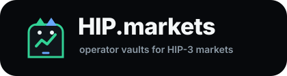
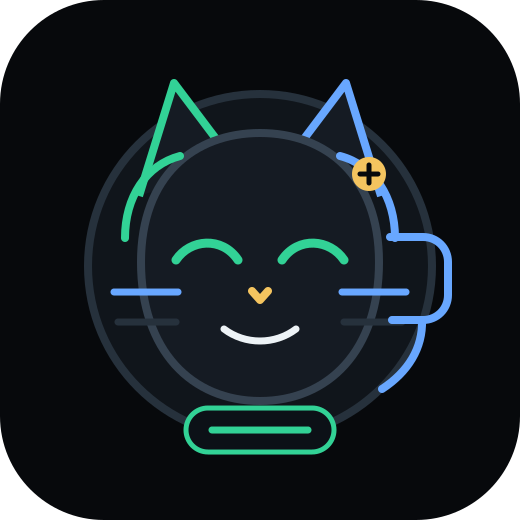

Original brand system
Operator-vault credibility with Hyperliquid-native energy.
HIP Cat is a risk sentinel, not a mascot gag: it watches oracle cadence, stake readiness, fee flow, and slashing exposure.
Terminal#07090C
Execution#32D296
Oracle data#68A7FF
Risk#F4C45F

Native, not copiedCat motif nods to Hyperliquid culture while staying distinct.
Risk beside yieldEvery APR claim has lifecycle, slashing, and fee-cost context.
Terminal-first UXDense, inspectable, and built for repeated operator review.